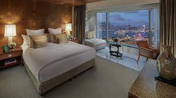

Nuestra visión
En Café Conexión, nos imaginamos como el espacio predilecto donde las ideas y las tazas se encuentran, promoviendo conexiones significativas y experiencias memorables. Nos comprometemos a brindar un entorno que fomente la creatividad, el aprendizaje y las relaciones humanas.
A través de nuestras tres sucursales, buscamos ser referentes en calidad, ambiente y atención en el sector de cafés de especialidad, contribuyendo a la cultura del café en cada comunidad donde operamos.
Nuestra misión
Nuestra misión es ofrecer café de especialidad de la más alta calidad en un entorno diseñado para inspirar, conectar y satisfacer las necesidades de nuestros clientes. Creamos espacios acogedores que integran innovación y tradición, mientras apoyamos prácticas sostenibles y valoramos la experiencia del cliente en cada detalle.
Ya sea disfrutando de una taza de café, asistiendo a un evento o trabajando en un proyecto, nos esforzamos por crear momentos únicos que fortalezcan las relaciones y el bienestar de quienes nos eligen.
Galeria
Vea nuestro hotel y nuestros servicios.
Entre los hoteles en Buenos Aires, Argentina, níngun destino reúne estilo, servicios y comodidades en una ubicación céntrica como Hoteles Porteños. Con instalaciones que van desde un moderno gimnasio hasta ocho sotisficadas salas de reuniones y un centro de negocios, hasta un restaurante. Somos la opción ideal para sus estadías de negocios o placer en la bulliciosa capital Argentina. Consulte nuestra galeria de fotos para obtener más información sobre las caracteristicas y las instalaciones del hotel.

Ubicación
Conveniente ubicado en el centro de Buenos Aires.
"Café Conexión está ubicado en el corazón del centro de Buenos Aires, rodeado por el vibrante movimiento de la ciudad. Es el lugar perfecto para hacer una pausa, ya sea para disfrutar de un café de especialidad, estudiar, trabajar o simplemente relajarte. Nos encontramos cerca de áreas comerciales y culturales, brindándote un espacio único donde las ideas y las tazas se encuentran." "Si deseas más información sobre nuestras promociones o productos, no dudes en contactarnos. ¡Te esperamos con el mejor café y un ambiente que invita a la conexión!"